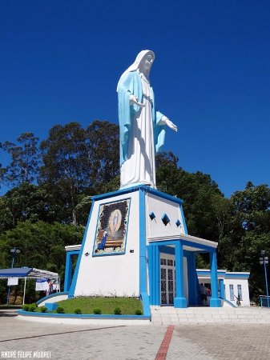
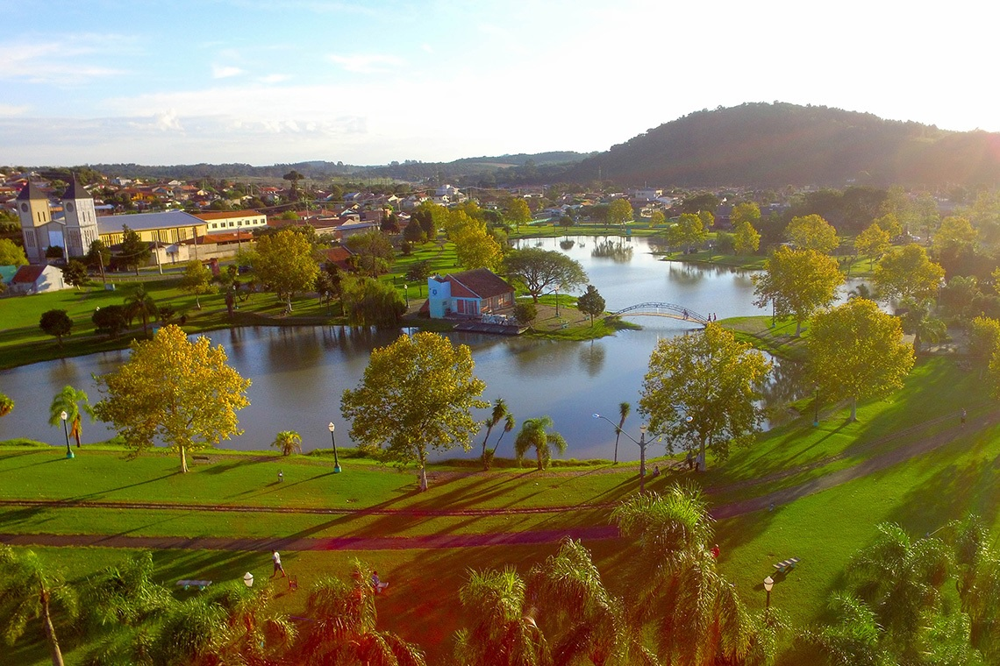

Nossa Senhora das Graças
Quem passa pela cidade de Irati não pode deixar de visitar a estátua de Nossa Senhora das Graças, que é a 2ª maior do mundo.
É da colina que se tem a melhor vista da cidade, além de ser um lugar tranquilo de paz e meditação.
Parque Aquático
Uma ótima opção para quem deseja passar o final de semana em família ou com os amigos.
Casa da cultura

Este local, ao longo dos anos, prestou apoio às atividades culturais promovidas por entidades diversas, promovendo a cultura nos diferentes níveis, oportunizando as manifestações artísticas nas diversas áreas, como artes plásticas, teatro, música e outras, tornando acessíveis as atividades artísticas a toda população.